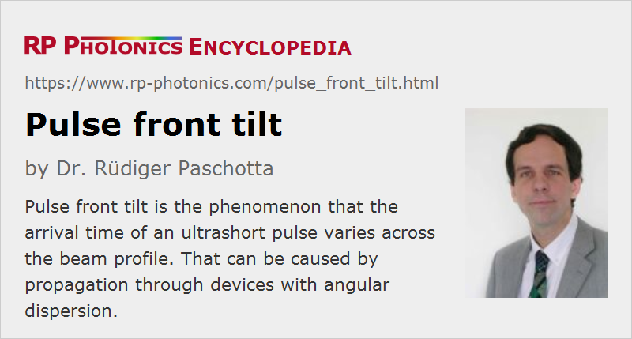

Pulse Front Tilt
Definition: the phenomenon that the arrival time of an ultrashort pulse varies across the beam profile
German: Wellenfrontverkippung eines Pulses
How to cite the article; suggest additional literature
Author: Dr. Rüdiger Paschotta
Pulse front tilt is a phenomenon which is often encountered in ultrafast laser physics, particularly in the context of very broadband ultrashort pulses. Essentially it means that the arrival time of an ultrashort pulse varies across the beam profile (Figure 1). In other words, there is a tilt between the pulse front and a direction perpendicular to the beam.
It can be shown [1] that a pulse front tilt is intimately related to angular dispersion, i.e., with a dependence of the wavefront orientation on the optical frequency. It is thus somewhat problematic to interpret pulse front tilt as an angle between the pulse front and the wavefront, because the wavefront orientation is frequency-dependent. Note that pulse front tilt can also result from simultaneous spatial and temporal chirp [4].
Origins and Applications
Pulse front tilts can arise in various situations. For example, there is a strong pulse front tilt when a laser beam with ultrashort pulses is spatially dispersed by a prism or a diffraction grating. A linear pulse compressor based on a prism pair or a pair of diffraction gratings, when well aligned, should in principle not cause angular dispersion or pulse front tilt outside its setup, but for broadband pulses, slight misalignment can change that. Even for perfect alignment, slight beam divergence inside the device can cause a pulse front tilt. Note also that the use of slightly wedged optical components is common, and these also introduce angular dispersion.
For narrowband pulses, e.g. with pulse durations of multiple picoseconds, accidental pulse front tilt with a significant magnitude can hardly occur, but ultrabroadband sources e.g. for few-cycle laser pulses are rather sensitive to such effects.
In some cases, a deliberately created pulse front chirp can be useful, e.g. in nonlinear frequency conversion, including the generation of terahertz or x-ray pulses.
Measurement of Pulse Front Tilt
Many techniques for pulse characterization are not able to reveal pulse front tilts, which can then simulate a longer pulse duration e.g. in measurements with autocorrelators. There are, however, specially adapted autocorrelators for measuring pulse front tilt [2], and the GRENOUILLE technique can also be used [3].
Questions and Comments from Users
Here you can submit questions and comments. As far as they get accepted by the author, they will appear above this paragraph together with the author’s answer. The author will decide on acceptance based on certain criteria. Essentially, the issue must be of sufficiently broad interest.
Please do not enter personal data here; we would otherwise delete it soon. (See also our privacy declaration.) If you wish to receive personal feedback or consultancy from the author, please contact him e.g. via e-mail.
By submitting the information, you give your consent to the potential publication of your inputs on our website according to our rules. (If you later retract your consent, we will delete those inputs.) As your inputs are first reviewed by the author, they may be published with some delay.
Bibliography
| [1] | J. Hebling, “Derivation of the pulse front tilt caused by angular dispersion”, Opt. Quantum Electron. 28 (12), 1759 (1996), doi:10.1007/BF00698541 |
| [2] | Z. Sacks et al., “Adjusting pulse-front tilt and pulse duration by use of a single-shot autocorrelator”, Opt. Lett. 26 (7), 462 (2001), doi:10.1364/OL.26.000462 |
| [3] | S. Akturk et al., “Measuring pulse-front tilt in ultrashort pulses using GRENOUILLE”, Opt. Express 11 (5), 491 (2003), doi:10.1364/OE.11.000491 |
| [4] | S. Akturk et al., “Pulse-front tilt caused by spatial and temporal chirp”, Opt. Express 12 (19), 4399 (2004), doi:10.1364/OPEX.12.004399 |
| [5] | S. Akturk et al., “The general theory of first-order spatio-temporal distortions of Gaussian pulses and beams”, Opt. Express 13 (21), 8642 (2005), doi:10.1364/OPEX.13.008642 |
See also: ultrashort pulses, prisms, pulse characterization
and other articles in the category light pulses
|  |
If you like this page, please share the link with your friends and colleagues, e.g. via social media:
These sharing buttons are implemented in a privacy-friendly way!